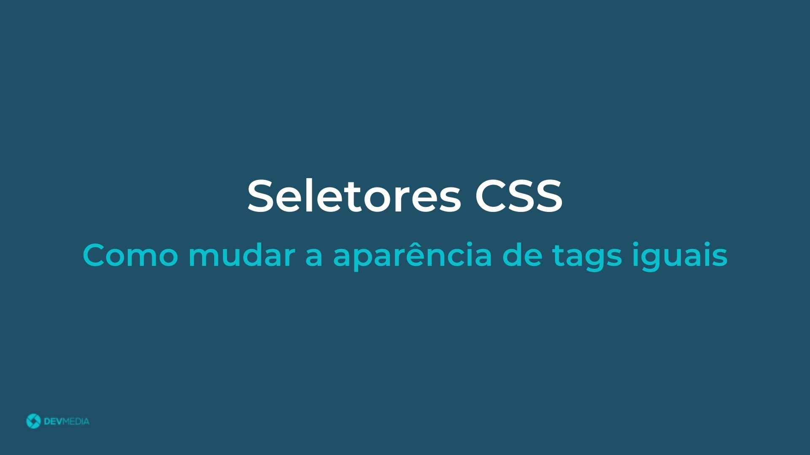
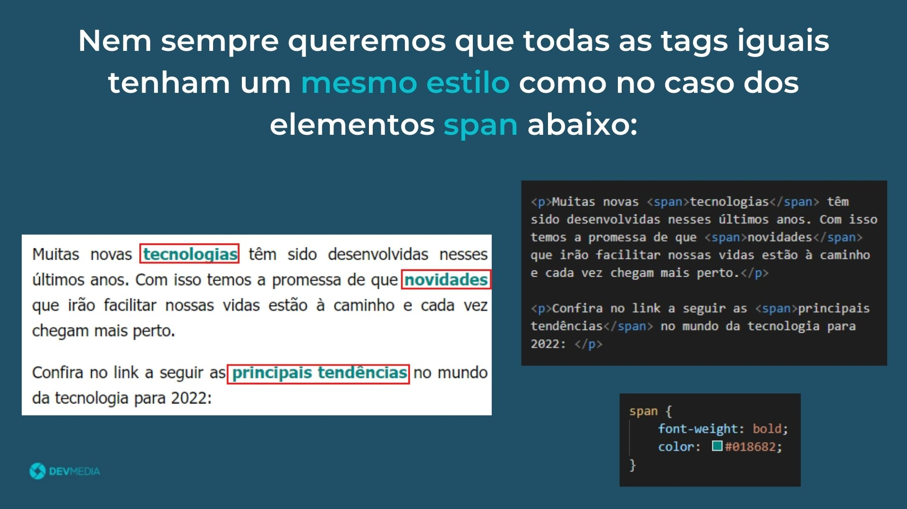
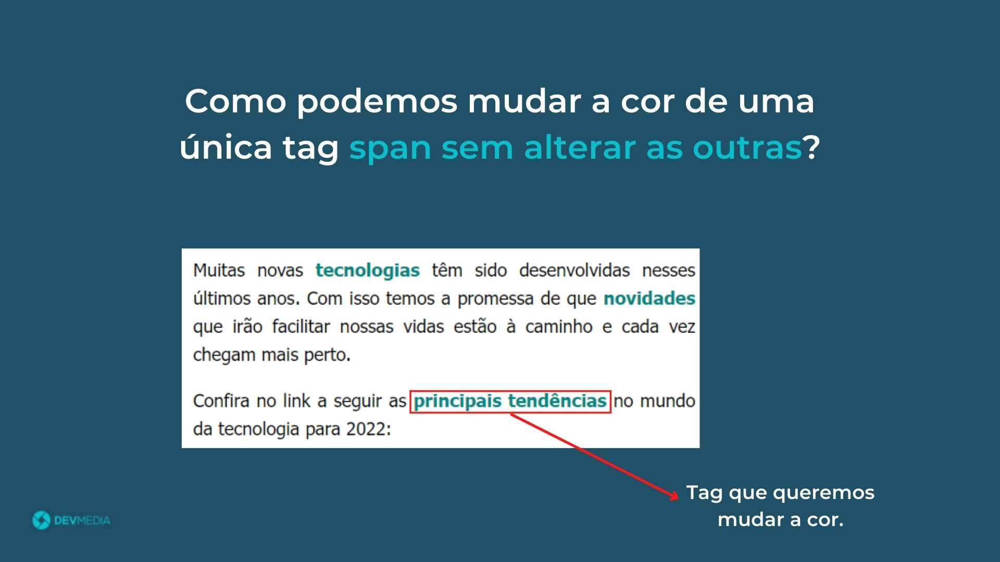
 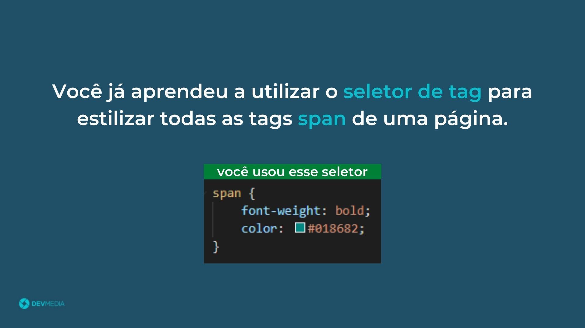
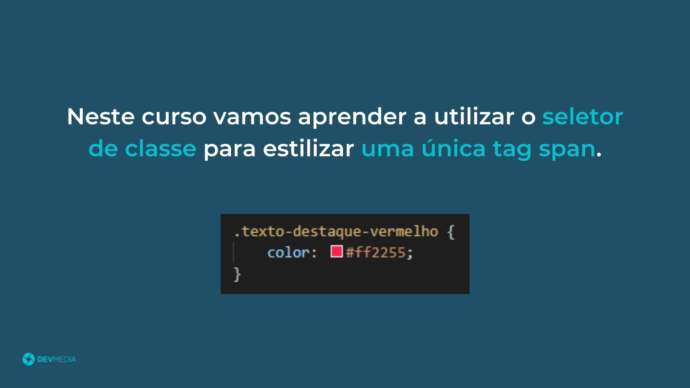
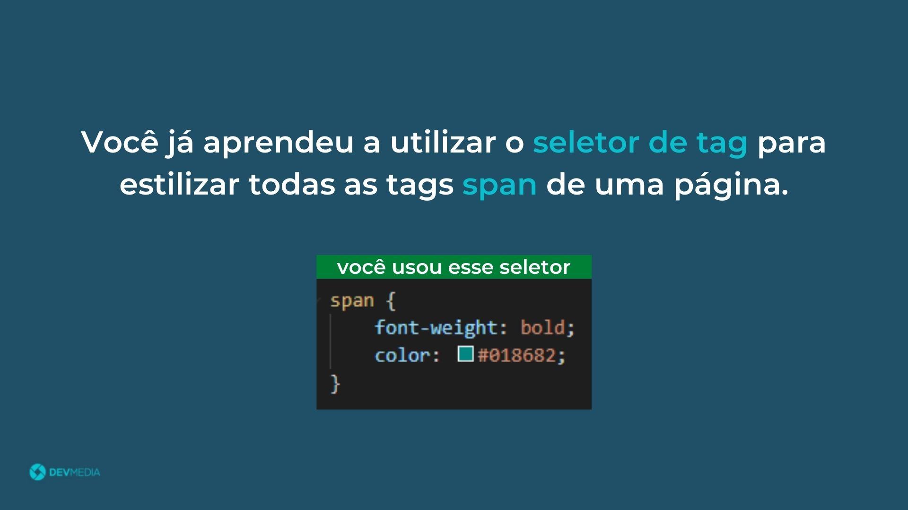
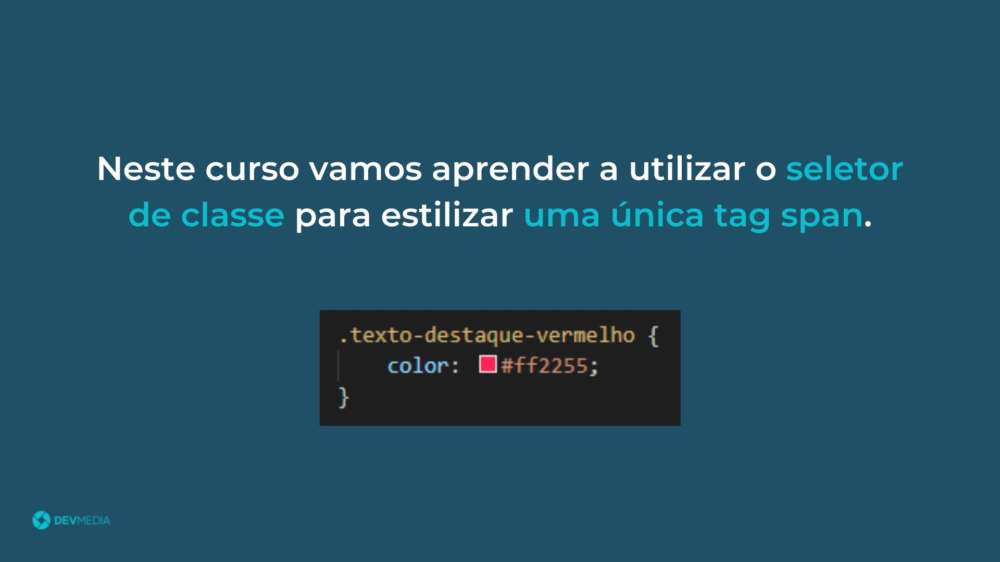
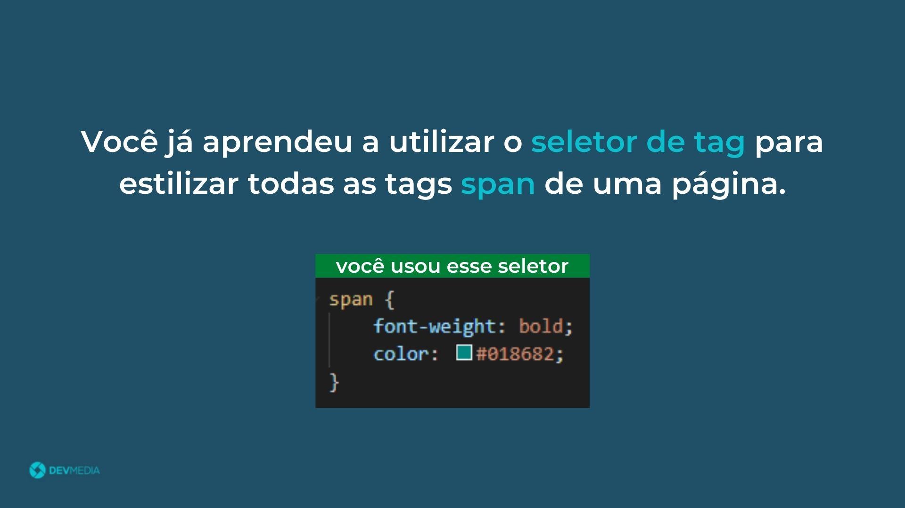
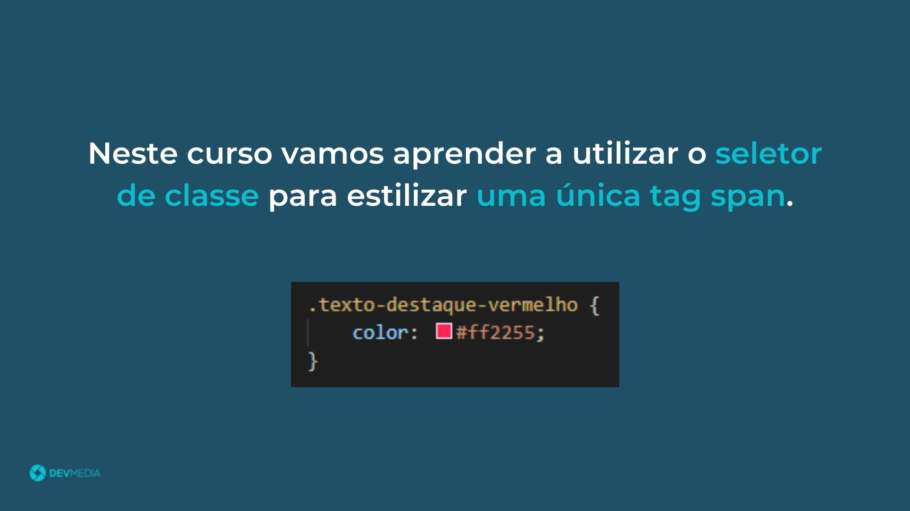
Ao estilizar páginas muitas vezes lidamos com a seguinte situação: como definir estilos diferentes para dois elementos de tags iguais?
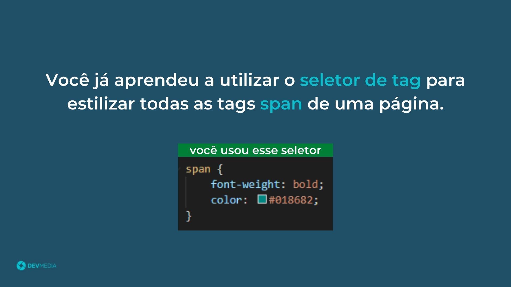
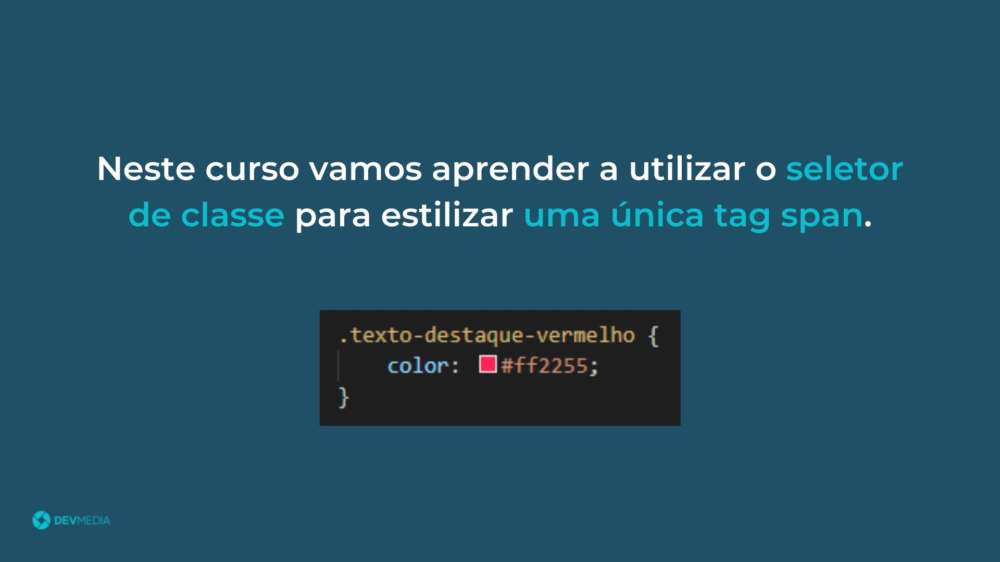
Seletores são fundamentais para estilizar elementos HTML. Você pode utilizar seletores de tag ou de classe para definir estilos na sua página.

É comum em um código CSS utilizarmos diversos seletores para definir os estilos dos elementos. Os seletores de tag geralmente são usados para estilos globais, enquanto os seletores de classe são usados para estilos mais específicos.